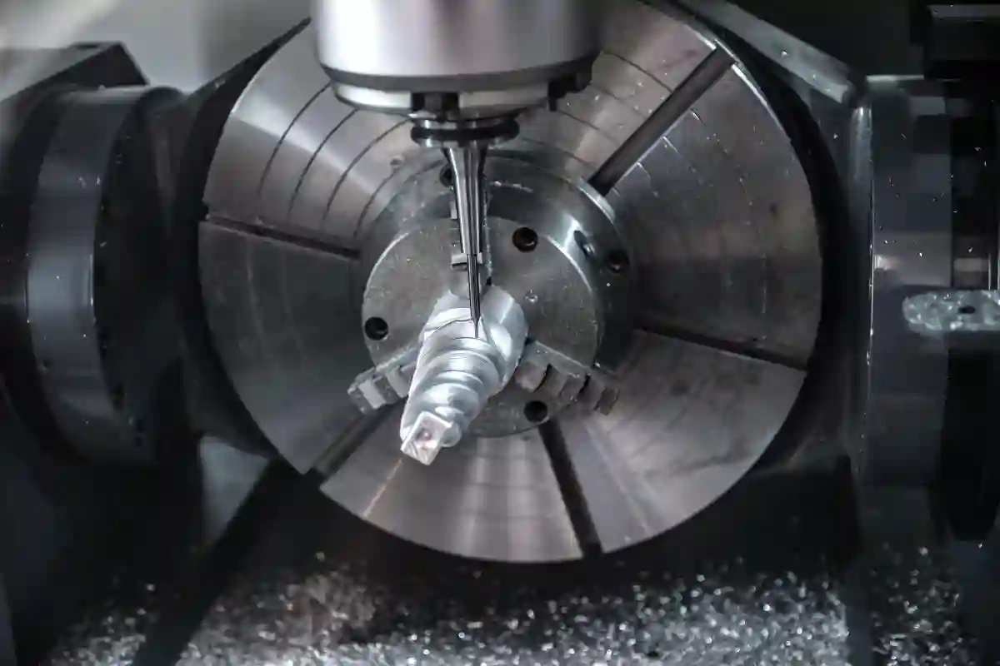
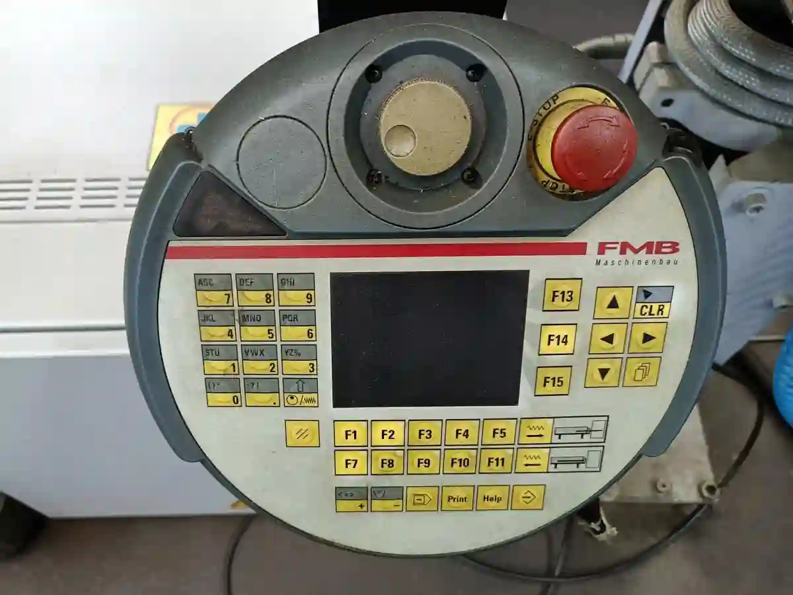

CNC Frezeleme Nedir? Teknolojileri ve Endüstriyel Kullanım Alanları
CNC frezeleme nedir sorusu, modern imalat sanayisinin temel taşlarından biri olan talaşlı üretim teknolojilerini anlamak açısından kritik bir başlangıç noktasıdır. Bu noktada cnc frezeleme nedir sorusu, modern talaşlı imalat süreçlerinin anlaşılması açısından temel bir referans noktasıdır. CNC (Computer Numerical Control) frezeleme; metal, plastik veya kompozit malzemelerin, sayısal komutlarla kontrol edilen freze tezgâhları üzerinde yüksek hassasiyetle işlenmesini ifade eder. Bu yöntemde kesici takımlar, iş parçası üzerinde belirlenen eksenlerde hareket ederek istenilen geometrinin elde edilmesini sağlar.
Geleneksel frezeleme yöntemlerinden farklı olarak CNC tabanlı sistemlerde insan müdahalesi minimuma iner. Kesme derinliği, ilerleme hızı, takım yolu ve tolerans değerleri tamamen dijital ortamda tanımlanır. Bu durum hem tekrarlanabilirliği artırır hem de karmaşık geometrilerin üretimini mümkün kılar. Özellikle savunma, otomotiv, medikal ve havacılık gibi yüksek hassasiyet gerektiren sektörlerde cnc freze parça üretimi vazgeçilmez bir yöntem hâline gelmiştir.
CNC frezeleme sistemleri yalnızca üretim hızını değil, aynı zamanda kalite standardizasyonunu da doğrudan etkiler. Aynı parçanın yüzlerce kez aynı toleranslarda üretilebilmesi, seri imalat yapan firmalar için ciddi bir rekabet avantajı yaratır. Bu noktada CNC frezeleme, yalnızca bir üretim tekniği değil; aynı zamanda sürdürülebilir kalite yönetiminin de temel unsurlarından biridir.
CNC Frezeleme Teknolojisinin Talaşlı İmalattaki Yeri

Talaşlı imalat, malzemenin kontrollü şekilde uzaklaştırılması esasına dayanır ve CNC frezeleme bu sürecin en gelişmiş uygulamalarından biridir. Özellikle karmaşık yüzeyler, cepler, kanallar ve üç boyutlu formlar söz konusu olduğunda frezeleme teknolojileri torna işlemlerine kıyasla daha esnek çözümler sunar.
Bu bağlamda CNC frezeleme, CNC Üretim Teknolojileri çatısı altında değerlendirilen ana üretim yöntemlerinden biridir. Frezeleme işlemi sırasında iş parçası sabitlenir, kesici takım ise birden fazla eksende hareket eder. Bu yapı sayesinde prizmatik parçalar, kalıplar ve özel geometriler yüksek doğrulukla üretilebilir.
CNC frezeleme süreçleri, Talaşlı İmalatta Kullanılan Temel Teknikler arasında yer alır ve çoğu zaman diğer üretim yöntemleriyle entegre şekilde kullanılır. Örneğin bir parçanın kaba formu tornada oluşturulurken, hassas yüzeyleri ve cepleri frezeleme ile tamamlanabilir. Bu entegrasyon, üretim süresini kısaltırken kaliteyi artırır. Bu nedenle cnc frezeleme nedir sorusu, talaşlı imalatın temel teknik yapısını kavramak isteyenler için kritik bir başlangıç noktasıdır.
CNC Frezeleme ile Gelen Üretim Esnekliği
CNC frezeleme teknolojisinin en önemli avantajlarından biri, üretim esnekliğidir. Farklı malzemeler üzerinde aynı tezgâh ile çalışılabilmesi, küçük ölçekli üretimden seri imalata kadar geniş bir kullanım alanı sunar. Alüminyumdan paslanmaz çeliğe, mühendislik plastiklerinden titanyuma kadar birçok malzeme CNC frezeleme ile işlenebilir.
Bu esneklik, özellikle prototip üretim süreçlerinde kritik rol oynar. Tasarım aşamasında yapılan revizyonlar, dijital programlama sayesinde hızlıca üretime yansıtılabilir. Böylece zaman kaybı minimuma indirilir ve ürün geliştirme süreci hızlanır.
CNC Frezeleme Nasıl Yapılır? (Temel Süreç Mantığı)
CNC frezeleme nasıl yapılır sorusunun yanıtı, yalnızca makine kullanımını değil, aynı zamanda mühendislik bakış açısını da kapsar. Süreç, CAD (Computer Aided Design) ortamında hazırlanan üç boyutlu model ile başlar. Bu model, CAM (Computer Aided Manufacturing) yazılımları aracılığıyla takım yollarına dönüştürülür. CNC frezeleme nedir sorusuna teknik bir yanıt verebilmek için, sürecin nasıl kurgulandığını ve hangi adımlarla gerçekleştirildiğini doğru şekilde anlamak gerekir.
Oluşturulan takım yolları, tezgâhın kontrol ünitesine aktarılır. Bu aşamada kesme parametreleri, takım seçimi ve bağlama yöntemleri belirlenir. CNC freze tezgâhı, bu veriler doğrultusunda kesici takımı yönlendirerek parçayı işler. Sürecin her aşaması ölçülebilir ve izlenebilir olduğu için hata payı minimum seviyededir.
Bu noktada frezeleme ile tornalama arasındaki farkların iyi anlaşılması gerekir. Satın alma ve üretim planlaması açısından bu farkları detaylı şekilde ele alan CNC Tornalama mı Frezeleme mi? Satın Alma Açısından Farklar içeriği, karar süreçlerinde önemli bir referans sunar.
Programlama ve Operasyonel Kontrolün Önemi
CNC frezeleme süreçlerinde programlama kalitesi, doğrudan parça kalitesini belirler. Yanlış tanımlanmış bir takım yolu, yüzey hatalarına veya ölçüsel sapmalara neden olabilir. Bu nedenle operatör ve programcı deneyimi, CNC frezeleme başarısının temel unsurlarından biridir.
Modern üretim tesislerinde, programlama süreçleri simülasyon yazılımları ile test edilir. Bu yaklaşım, üretim öncesi olası çarpışmaları ve hataları tespit etmeyi sağlar. Böylece hem takım ömrü uzar hem de üretim güvenliği artar.
CNC Freze Tezgâhı Özellikleri ve Teknik Kapasiteler

Bir üretim tesisinde frezeleme sürecinin başarısı, büyük ölçüde kullanılan tezgâhın teknik yetenekleriyle doğrudan ilişkilidir. Bu noktada cnc freze tezgahı özellikleri, hem parça kalitesini hem de üretim sürekliliğini belirleyen temel faktörler arasında yer alır. CNC freze tezgâhları; eksen sayısı, iş mili gücü, tabla ölçüleri ve kontrol ünitesi gibi birçok teknik parametreye göre sınıflandırılır. Bu teknik yapı, cnc frezeleme nedir sorusuna yalnızca teorik değil, pratik bir yanıt sunulmasını da mümkün kılar.
Modern CNC freze tezgâhlarında yüksek devirli iş milleri, sert malzemelerin dahi stabil şekilde işlenmesini mümkün kılar. Aynı zamanda rijit gövde yapısı, titreşimi minimum seviyeye indirerek yüzey kalitesini artırır. Bu özellikler, özellikle hassas tolerans gerektiren cnc freze parça üretimi süreçlerinde kritik öneme sahiptir.
Tezgâh seçiminde dikkat edilmesi gereken bir diğer unsur ise otomasyon seviyesidir. Takım değiştiriciler, prob sistemleri ve otomatik bağlama çözümleri, insan hatasını azaltarak üretim verimliliğini yükseltir. Bu nedenle CNC freze tezgâhları, yalnızca bir makine değil; entegre bir üretim sistemi olarak değerlendirilmelidir.
İş Mili, Tabla ve Eksen Yapısının Üretime Etkisi
CNC frezeleme performansını belirleyen ana bileşenlerden biri iş milidir. İş mili gücü ve devir aralığı, hangi malzemelerin hangi hızlarda işlenebileceğini doğrudan etkiler. Yüksek torklu iş milleri, derin talaş kaldırma işlemlerinde avantaj sağlarken; yüksek devirli miller ince yüzey finisajı gerektiren uygulamalarda öne çıkar.
Tabla ölçüleri ise işlenebilecek parça boyutunu sınırlar. Büyük hacimli parçalar için geniş ve rijit tablalar tercih edilirken, küçük ve hassas parçalar için kompakt sistemler yeterli olabilir. Eksen yapısı (X, Y, Z) ve hareket mesafeleri, tezgâhın geometrik kapasitesini belirler.
Bu teknik yapı, CNC Frezeleme / Dik İşleme hizmetlerinin hangi ölçekte ve hassasiyette sunulabileceğini doğrudan etkiler. Profesyonel üretim tesislerinde, farklı eksen kapasitelerine sahip birden fazla CNC freze tezgâhının bulunması bu nedenle yaygın bir yaklaşımdır.
Dik İşleme Merkezi Nedir ve Nerelerde Kullanılır?
Üretim dünyasında sıkça karşılaşılan kavramlardan biri olan dik işleme merkezi nedir sorusu, CNC frezeleme teknolojilerini anlamak açısından önemlidir. Ayrıca Üretim dünyasında sıkça karşılaşılan dik işleme merkezleri, cnc frezeleme nedir sorusunun uygulamadaki en net karşılıklarından biridir. Dik işleme merkezleri, iş milinin dikey konumlandığı CNC freze tezgâhlarıdır. Bu yapı, özellikle prizmatik parçaların işlenmesinde yüksek doğruluk ve erişilebilirlik sağlar.
Dik işleme merkezleri, kalıpçılık, otomotiv ve savunma sanayi gibi sektörlerde yoğun şekilde kullanılır. Parça üzerine üstten erişim imkânı sunduğu için cep açma, kanal frezeleme ve yüzey işleme operasyonlarında ciddi avantaj sağlar. Aynı zamanda operatör kontrolünün daha kolay olması, bu sistemleri seri üretim için ideal hâle getirir.
Türkiye’de CNC teknolojilerinin sanayideki yaygınlaşmasına yönelik teknik yayınlar ve standartlar, Sanayi ve Teknoloji Bakanlığı ile bağlantılı kurumlar tarafından da desteklenmektedir. Örneğin, talaşlı imalat ve CNC teknolojilerine yönelik teknik dokümanlara TÜBİTAK | Türkiye Bilimsel ve Teknolojik Araştırma Kurumu üzerinden erişilebilmektedir.
Dik İşleme Merkezlerinin Avantajları
Dik işleme merkezlerinin en önemli avantajlarından biri, çok yönlü operasyon kabiliyetidir. Aynı bağlama içerisinde birden fazla yüzeyin işlenebilmesi, ölçüsel doğruluğu artırır. Bu durum, özellikle tolerans zincirinin kritik olduğu parçalarda kalite sürekliliği sağlar.
Ayrıca bu sistemler, otomatik takım değiştiriciler ve prob ölçüm sistemleriyle entegre çalışabilir. Böylece ölçüm ve ayarlama süreleri kısalır, üretim çevrim süresi optimize edilir. Bu avantajlar, CNC frezeleme süreçlerini daha öngörülebilir ve sürdürülebilir hâle getirir.
Çok Eksenli CNC Frezeleme ile Karmaşık Geometriler
Geleneksel üç eksenli sistemlerin ötesine geçen çok eksenli cnc frezeleme, modern üretim ihtiyaçlarının doğal bir sonucudur. 4 eksen ve 5 eksen CNC frezeleme sistemleri, iş parçasının farklı açılardan tek bağlamada işlenmesini mümkün kılar. Bu yaklaşım, özellikle karmaşık geometrilere sahip parçaların üretiminde devrim niteliğindedir.
Çok eksenli sistemler sayesinde takım, parça yüzeyine her zaman ideal açıyla yaklaşabilir. Bu durum hem yüzey kalitesini artırır hem de takım aşınmasını azaltır. Havacılık ve medikal sektörlerinde kullanılan serbest formlu yüzeyler, bu teknoloji olmadan verimli şekilde üretilemez.
Bu tür ileri seviye uygulamalar, Talaşlı İmalatta Kullanılan Temel Teknikler arasında yer alan klasik yöntemlerin ötesinde bir mühendislik yaklaşımı gerektirir. Programlama süreci daha karmaşık olsa da sağladığı üretim avantajları, bu yatırımı stratejik hâle getirir.
5 Eksen Frezeleme Sistemlerinin Stratejik Önemi
5 eksenli CNC frezeleme, özellikle yüksek katma değerli parça üretiminde tercih edilir. Kalıp ve prototip üretiminde tek bağlama ile tamamlanan işlemler, ölçüsel sapmaları minimize eder. Bu da kalite kontrol süreçlerini daha öngörülebilir kılar.
Türkiye’de ileri imalat teknolojilerine yönelik eğitim ve standardizasyon çalışmaları, üniversiteler ve mesleki kurumlar tarafından desteklenmektedir. CNC ve talaşlı imalat alanındaki mesleki standartlara ilişkin içerikler için T.C. Millî Eğitim Bakanlığı adresinde yayımlanan teknik eğitim dokümanları referans alınabilir.
CNC Frezeleme Avantajları ve Üretim Süreçlerine Katkısı
Modern imalat dünyasında cnc frezeleme avantajları, bu teknolojinin neden bu kadar yaygın kullanıldığını açıkça ortaya koyar. CNC frezeleme, yalnızca bir işleme yöntemi değil; kalite, hız ve tekrar edilebilirlik odaklı bir üretim yaklaşımıdır. Özellikle rekabetin yoğun olduğu sektörlerde, üretim süreçlerinin öngörülebilir olması firmalar için stratejik bir üstünlük sağlar. Bu avantajlar değerlendirildiğinde, cnc frezeleme nedir sorusunun neden sanayide bu kadar sık sorulduğu daha net anlaşılır.
CNC frezeleme sistemleri, manuel yöntemlere kıyasla çok daha düşük hata payı ile çalışır. Sayısal kontrol sayesinde ölçüsel sapmalar minimize edilir, toleranslar kararlı biçimde korunur. Bu durum, seri üretimde parça uyumsuzluklarını ortadan kaldırarak fire oranlarını düşürür. Aynı zamanda üretim planlaması daha sağlıklı yapılabildiği için teslim süreleri netleşir.
Bir diğer önemli avantaj ise üretim esnekliğidir. Farklı parça geometrileri, yalnızca program değişikliği ile aynı tezgâh üzerinde işlenebilir. Bu özellik, özellikle müşteri taleplerinin sık değiştiği özel üretim projelerinde büyük kolaylık sağlar. Bu bağlamda cnc freze parça üretimi, düşük adetli ama yüksek hassasiyet gerektiren işler için ideal bir çözüm sunar.
Hassasiyet, Tekrarlanabilirlik ve Kalite Sürekliliği
CNC frezeleme teknolojisinin temel farkı, hassasiyetin operatöre değil sisteme bağlı olmasıdır. Dijital ortamda tanımlanan takım yolları ve kesme parametreleri, her üretim döngüsünde aynı sonucu verir. Bu yapı, kalite kontrol süreçlerini sadeleştirir ve ölçüm maliyetlerini düşürür.
Özellikle otomotiv ve savunma sanayinde, parçalar arası ölçüsel tutarlılık kritik öneme sahiptir. CNC frezeleme ile üretilen parçalar, kalite standartlarına daha kolay uyum sağlar. Bu durum, ISO ve benzeri kalite sistemlerinin gerektirdiği izlenebilirlik kriterlerini karşılamayı da kolaylaştırır.
Bu kalite yaklaşımı, CNC Üretim Teknolojileri çatısı altında sunulan profesyonel üretim hizmetlerinin temelini oluşturur. Üretim altyapısında CNC frezeleme bulunan firmalar, kalite sürekliliği açısından önemli bir avantaja sahiptir.
CNC Frezeleme ile Endüstriyel Uygulama Alanları
CNC frezeleme nedir sorusunun pratik karşılığı, bu teknolojinin hangi sektörlerde kullanıldığı incelendiğinde daha net anlaşılır. CNC frezeleme, çok geniş bir endüstriyel yelpazede aktif olarak kullanılan bir üretim yöntemidir. Bu çeşitlilik, teknolojinin esnekliğini ve uyarlanabilirliğini ortaya koyar. Bu noktada cnc frezeleme nedir sorusu, farklı sektörlerdeki kullanım senaryoları üzerinden somutlaşır.
Otomotiv sektöründe motor parçaları, bağlantı elemanları ve özel montaj aparatları CNC frezeleme ile üretilir. Havacılık sektöründe ise hafif ama dayanıklı yapısal bileşenler, yüksek hassasiyet gereksinimi nedeniyle bu yöntemle işlenir. Medikal alanda implantlar ve cerrahi ekipmanlar, CNC frezeleme sayesinde mikron seviyesinde toleranslarla üretilebilir.
Türkiye’de sanayinin dijital dönüşümüne yönelik raporlar, CNC ve talaşlı imalat teknolojilerinin stratejik önemini vurgulamaktadır. Bu konuda yayımlanan resmi değerlendirmelere T.C. Sanayi ve Teknoloji Bakanlığı adresi üzerinden ulaşılabilir.
Otomotiv, Havacılık ve Savunma Sanayinde CNC Frezeleme
Otomotiv sektöründe CNC frezeleme, hem prototip hem de seri üretim aşamalarında aktif rol oynar. Parça uyumluluğu ve yüzey kalitesi, araç performansını doğrudan etkilediği için frezeleme süreçleri büyük titizlikle planlanır. Aynı zamanda otomasyon seviyesi yüksek olduğu için üretim süreleri optimize edilir.
Havacılık ve savunma sanayinde ise çok eksenli cnc frezeleme sistemleri öne çıkar. Karmaşık geometrilere sahip parçaların tek bağlamada işlenmesi, hem yapısal dayanımı artırır hem de ölçüsel hataları azaltır. Bu sektörlerde kullanılan malzemelerin işlenmesi zor olduğu için yüksek rijitlik ve hassasiyet vazgeçilmezdir.
Bu tür ileri seviye uygulamalar, Talaşlı İmalatta Kullanılan Temel Teknikleri ile entegre şekilde yürütülür. Frezeleme, tornalama ve ölçüm süreçleri birlikte planlanarak üretim zinciri bütüncül bir yapıya kavuşturulur.
Kalıp, Prototip ve Özel Parça Üretiminde CNC Frezeleme
Kalıpçılık sektörü, CNC frezeleme teknolojisinin en yoğun kullanıldığı alanlardan biridir. Kalıp yüzeylerinin pürüzsüzlüğü ve ölçüsel doğruluğu, nihai ürün kalitesini doğrudan etkiler. Bu nedenle kalıp üretiminde CNC frezeleme, vazgeçilmez bir yöntem olarak kabul edilir.
Prototip üretiminde ise hız ve esneklik ön plandadır. Tasarım değişikliklerinin hızlı şekilde üretime yansıtılabilmesi, ürün geliştirme sürecini kısaltır. CNC frezeleme sayesinde prototip parçalar, seri üretime yakın kalitede üretilebilir. Bu da test ve doğrulama süreçlerini daha sağlıklı hâle getirir.
Özel parça üretiminde CNC frezeleme, düşük adetli ama yüksek hassasiyetli işler için ideal bir çözümdür. Müşteri taleplerine göre özelleştirilen parçalar, dijital programlama sayesinde hızlıca üretilebilir. Bu yaklaşım, esnek üretim anlayışının temelini oluşturur.
Küçük Seri ve Özel Üretimlerde Esnek Planlama
CNC frezeleme sistemleri, küçük seri üretimlerde manuel yöntemlere göre çok daha avantajlıdır. Programlama maliyeti kısa sürede amorti edilir ve her yeni parça için tekrar ayar yapılmasına gerek kalmaz. Bu durum, üretim sürekliliğini destekler.
Türkiye’de KOBİ’lerin üretim kabiliyetlerini artırmaya yönelik teknik destek ve yönlendirmeler, meslek kuruluşları tarafından da ele alınmaktadır. İmalat teknolojilerine dair sektörel değerlendirmeler için TOBB – Türkiye Odalar ve Borsalar Birliği üzerinden yayımlanan sanayi raporları referans alınabilir.
CNC Frezeleme Süreçlerinde Kalite Kontrol ve Tolerans Yönetimi
CNC üretimde sürdürülebilir başarının temelinde kalite kontrol ve tolerans yönetimi yer alır. CNC frezeleme nedir sorusunu teknik açıdan ele aldığımızda, yalnızca kesme işlemini değil; ölçüm, doğrulama ve izlenebilirlik süreçlerini de kapsayan bütünsel bir üretim yaklaşımını ifade ettiğini söylemek mümkündür. Bu yaklaşım, hatasız üretim hedefinin sistematik olarak gerçekleştirilmesini sağlar.
CNC frezeleme nedir sorusu, kalite kontrol ve tolerans yönetimi boyutu ele alınmadan eksik kalır. Mikron seviyesindeki sapmalar dahi, özellikle montaj gerektiren parçalarda ciddi uyumsuzluklara yol açabilir. Bu nedenle kalite kontrol, üretim sürecinin sonunda yapılan bir işlem değil; sürecin tamamına entegre edilen bir yönetim sistemidir.
Modern üretim tesislerinde ölçüm süreçleri, manuel yöntemlerin ötesine geçmiştir. CNC frezeleme tezgâhlarına entegre edilen prob sistemleri sayesinde parça, işleme sırasında ölçülebilir. Bu yaklaşım, proses içi kontrol (in-process inspection) olarak adlandırılır ve hataların erken aşamada tespit edilmesini sağlar.
Ölçüm Sistemleri ve Proses İçi Kontrol Yaklaşımları
CNC frezeleme süreçlerinde kullanılan ölçüm sistemleri, parça kalitesini doğrudan etkiler. Temaslı problar, lazer ölçüm sistemleri ve koordinat ölçüm cihazları (CMM), en yaygın kullanılan kontrol araçlarıdır. Bu sistemler, hem ölçüsel doğruluğu teyit eder hem de üretim verilerinin kayıt altına alınmasını sağlar.
Proses içi kontrol, özellikle seri üretimde büyük avantaj sunar. Parça, tezgâh üzerinden sökülmeden ölçülebildiği için bağlama kaynaklı hatalar minimize edilir. Aynı zamanda ölçüm sonuçlarına göre takım telafileri otomatik olarak güncellenebilir. Bu yapı, cnc freze parça üretimi süreçlerinde kalite sürekliliğini garanti altına alır.
Bu yaklaşım, CNC Frezeleme / Dik İşleme hizmetlerinin profesyonel tesislerde neden tercih edildiğini de açıklar. Entegre ölçüm altyapısı, üretim güvenilirliğini üst seviyeye taşır.
Yüzey Kalitesi, Takım Seçimi ve İşleme Parametreleri
CNC frezeleme süreçlerinde yüzey kalitesi, çoğu zaman parça performansını belirleyen ana faktördür. Yüzey pürüzlülüğü, yalnızca estetik bir kriter değil; aynı zamanda sürtünme, aşınma ve montaj uyumu gibi teknik unsurları da etkiler. Bu nedenle işleme parametrelerinin doğru belirlenmesi kritik öneme sahiptir.
Kesme hızı, ilerleme miktarı ve talaş derinliği gibi parametreler, yüzey kalitesini doğrudan etkiler. Yanlış parametreler, takım aşınmasını artırırken yüzeyde yanma veya dalgalanma gibi hatalara neden olabilir. Bu noktada doğru takım seçimi, CNC frezeleme başarısının temel taşlarından biridir.
Takım geometrisi ve kaplama teknolojileri, farklı malzemeler için özel olarak geliştirilmiştir. Örneğin alüminyum işleme için kullanılan kesici takımlar ile paslanmaz çelik için kullanılanlar aynı değildir. Bu teknik farklar, cnc freze tezgahı özellikleri ile birlikte değerlendirilmelidir.
Takım Aşınması ve Üretim Sürekliliği
Takım aşınması, CNC frezeleme süreçlerinde kaçınılmaz bir olgudur. Ancak doğru planlama ile bu aşınma kontrol altına alınabilir. Takım ömrünün izlenmesi, plansız duruşların önüne geçer ve üretim sürekliliğini destekler.
Modern üretim tesislerinde takım izleme sistemleri kullanılarak kesici performansı takip edilir. Belirli bir aşınma seviyesine ulaşıldığında takım otomatik olarak değiştirilir. Bu yaklaşım, hem parça kalitesini korur hem de üretim maliyetlerini optimize eder.
Türkiye’de talaşlı imalat ve ölçüm tekniklerine yönelik teknik standartlar, Türk Standartları Enstitüsü tarafından yayımlanmaktadır. Bu standartlara ilişkin resmi dokümanlara TSE – Türk Standardları Enstitüsü adresi üzerinden erişilebilir.
CNC Frezeleme Süreçlerinde Dokümantasyon ve İzlenebilirlik
Kalite kontrolün ayrılmaz bir parçası da dokümantasyon ve izlenebilirliktir. CNC frezeleme süreçlerinde üretilen her parça, belirli üretim parametreleri ile ilişkilendirilir. Bu veriler; kullanılan takım, işleme süresi, ölçüm sonuçları ve operatör bilgilerini içerebilir.
Bu kayıtlar, özellikle kalite denetimleri ve müşteri talepleri açısından büyük önem taşır. Geriye dönük izlenebilirlik, olası bir hata durumunda sorunun kaynağını hızlıca tespit etmeyi sağlar. Bu yapı, endüstriyel üretimde güven unsurunu güçlendirir.
İzlenebilirlik yaklaşımı, CNC Üretim Teknolojileri kapsamında faaliyet gösteren profesyonel firmaların temel kalite prensipleri arasında yer alır. Özellikle savunma ve havacılık gibi regülasyonların yoğun olduğu sektörlerde bu yaklaşım vazgeçilmezdir.
Dijital Üretim Verilerinin Stratejik Kullanımı
Toplanan üretim verileri, yalnızca kalite kontrol için değil; süreç iyileştirme ve maliyet analizi için de kullanılır. Hangi parametrelerin daha verimli sonuç verdiği, bu veriler sayesinde analiz edilebilir. Bu yaklaşım, sürekli iyileştirme (continuous improvement) kültürünün temelini oluşturur.
Türkiye’de dijitalleşme ve akıllı üretim sistemlerine yönelik genel çerçeve, Cumhurbaşkanlığı Dijital Dönüşüm Ofisi tarafından yayımlanan raporlarla ele alınmaktadır. Bu kapsamlı değerlendirmelere Türkiye Cumhuriyeti Cumhurbaşkanlığı Dijital Dönüşüm Ofisi üzerinden ulaşılabilir.
CNC Frezeleme Yatırımı ve Doğru Üretim Stratejisi
Bir üretim tesisinde CNC altyapısına yatırım yapmak, yalnızca makine satın almak anlamına gelmez. CNC frezeleme nedir sorusu bu noktada stratejik bir boyut kazanır; çünkü CNC frezeleme, doğru planlanmadığında yüksek maliyetli ancak doğru kurgulandığında uzun vadeli rekabet avantajı sağlayan bir üretim teknolojisidir.
CNC frezeleme yatırımı planlanırken; üretilecek parça türleri, tolerans beklentileri, yıllık üretim hacmi ve sektör gereksinimleri birlikte değerlendirilmelidir. Örneğin yalnızca prizmatik parçalar üreten bir tesis ile karmaşık geometrilere sahip parçalar üreten bir tesisin ihtiyaç duyacağı frezeleme altyapısı aynı değildir. Bu nedenle yatırım kararı, teknik analizle desteklenmelidir.
Ayrıca CNC frezeleme yatırımı, insan kaynağı ile birlikte ele alınmalıdır. Yüksek teknolojili bir tezgâh, deneyimsiz operatörler ile beklenen verimi sağlayamaz. Programlama bilgisi, takım teknolojisi hâkimiyeti ve kalite kontrol farkındalığı bu yatırımın geri dönüşünü doğrudan etkiler.
Kapasite Planlama ve Ölçeklenebilirlik
CNC frezeleme yatırımlarında en sık yapılan hatalardan biri, yalnızca mevcut ihtiyaçlara göre planlama yapmaktır. Oysa üretim tesisleri zaman içinde büyür, müşteri portföyü değişir ve parça çeşitliliği artar. Bu nedenle seçilecek CNC freze tezgâhlarının ölçeklenebilir olması büyük avantaj sağlar.
İleride çok eksenli cnc frezeleme gerektirebilecek projeler öngörülüyorsa, altyapının buna uygun planlanması gerekir. Aynı şekilde otomasyon ve entegrasyon imkânları, uzun vadeli verimlilik açısından kritik öneme sahiptir. Bu yaklaşım, üretim stratejisinin sürdürülebilirliğini garanti altına alır.
CNC Frezeleme ile Tornalama Arasındaki Stratejik Ayrım
Üretim planlamasında sıkça karşılaşılan sorulardan biri, frezeleme mi yoksa tornalama mı tercih edilmesi gerektiğidir. Bu karar, parça geometrisi ve fonksiyonel gereksinimlere göre verilmelidir. CNC frezeleme, özellikle prizmatik ve çok yüzeyli parçalar için idealken; tornalama daha çok silindirik geometrilerde avantaj sağlar.
Bu farkların satın alma ve üretim planlaması üzerindeki etkileri, CNC Tornalama mı Frezeleme mi? Satın Alma Açısından Farklar başlıklı içerikte detaylı şekilde ele alınmaktadır. Doğru yöntemin seçilmesi, üretim süresini ve maliyetleri doğrudan etkiler.
Stratejik açıdan bakıldığında, her iki teknolojinin entegre kullanımı en verimli çözümleri sunar. Birçok profesyonel üretim tesisinde CNC frezeleme ve tornalama hatları birlikte çalışır. Bu yapı, parça çeşitliliğini artırırken teslim sürelerini kısaltır.
Entegre Üretim Yaklaşımı ile Verimlilik Artışı
Entegre üretim yaklaşımında frezeleme, tornalama ve ölçüm süreçleri tek bir plan dahilinde yönetilir. Bu yaklaşım, üretim zincirindeki kopuklukları ortadan kaldırır. Özellikle hassas toleranslı cnc freze parça üretimi süreçlerinde bu entegrasyon, kalite sürekliliğini destekler.
Ayrıca üretim verilerinin ortak bir sistemde toplanması, süreç iyileştirme çalışmalarını kolaylaştırır. Bu da hem maliyet avantajı hem de müşteri memnuniyeti sağlar.
CNC Frezeleme Teknolojilerinde Uzmanlık Yaklaşımı
CNC frezeleme gibi yüksek teknik bilgi gerektiren bir konuda, yüzeysel anlatımlar yeterli değildir. Gerçek üretim deneyimine dayanan bilgiler, içeriğin güvenilirliğini artırır. CNC frezeleme süreçlerinde edinilen saha deneyimi; takım seçiminden bağlama yöntemlerine, tolerans yönetiminden kalite kontrol yaklaşımlarına kadar birçok detayı kapsar. Bu tür bilgiler, yalnızca teorik değil; pratik üretim gerçeklerine dayandığında değer kazanır.
Bu yaklaşım, CNC Üretim Teknolojileri alanında faaliyet gösteren firmaların dijital içeriklerinde neden teknik derinliğe odaklanması gerektiğini de açıklar. Arama motorları, yüzeysel içerikler yerine uzmanlık sinyali güçlü olan sayfaları öne çıkarır.
Üretim Altyapısı ve Güven Unsuru
Bir CNC frezeleme hizmetinin güvenilirliği, yalnızca makine parkuruyla değil; süreç yönetimi ve kalite anlayışıyla ölçülür. Ölçüm altyapısı, dokümantasyon disiplini ve izlenebilirlik sistemleri, profesyonel üretim anlayışının temel göstergeleridir.
Bu unsurların şeffaf şekilde paylaşılması, hem kullanıcı güvenini artırır hem de B2B satın alma kararlarını olumlu yönde etkiler. Özellikle teknik satın alma süreçlerinde, üretim altyapısı bilgisi kritik bir değerlendirme kriteridir.
Sonuç – CNC Frezeleme Neden Stratejik Bir Üretim Teknolojisidir?
CNC frezeleme nedir sorusuna verilen yanıt, bu teknolojinin neden modern imalatın merkezinde yer aldığını açıkça ortaya koymaktadır. CNC frezeleme; hassasiyet, esneklik ve kalite sürekliliğini aynı anda sunabilen nadir üretim yöntemlerinden biridir.
Sonuç olarak cnc frezeleme nedir sorusu, modern imalatın neden bu teknoloji etrafında şekillendiğini açıkça ortaya koymaktadır. Gerek seri üretimde gerek özel parça ve prototip çalışmalarında CNC frezeleme, firmalara ciddi rekabet avantajı sağlar. Doğru planlanan yatırımlar ve uzmanlıkla yönetilen süreçler sayesinde bu teknoloji, yalnızca bugünün değil; geleceğin üretim ihtiyaçlarına da yanıt verir. Endüstriyel üretimde sürdürülebilirlik, kalite ve hız arayan firmalar için CNC frezeleme, stratejik bir tercihten çok zorunlu bir altyapı hâline gelmiştir.